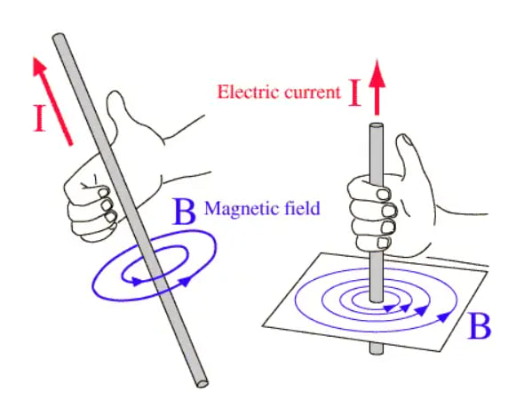

Transformer#
Author: Amirhossein Abolfazli Esfahani
What is transformer ?#
A transformer is an electrical device that uses the principle of electromagnetic induction to transfer energy from one electric circuit to another. It is designed to either increase or decrease AC voltage between the circuits while maintaining the frequency of the current. Transformers do this with no conductive connection between the two circuits. This is possible through the application of Faraday’s Law of Induction which describes how a magnetic field will interact with an electric circuit to produce electromotive force
Types of Transformers#
There are two main types of transformers: step-up transformers and step-down transformers. Step-up transformers increase the voltage in a circuit, while step-down transformers decrease the voltage. Step-up transformers are used in applications where a higher voltage is required, such as in power generation and transmission. Step-down transformers are used in applications where a lower voltage is required, such as in lighting and electronic equipment.
How do transformers work?#
The basic transformer comprises three parts: the magnetic core, the primary winding, and the secondary winding. The primary winding is connected to a live source of AC power. This produces an alternating magnetic field that surrounds the winding. This induces an EMF in the secondary winding. If the circuit of the secondary winding is closed, then AC current will flow through it. These windings share the magnetic core, which is usually made out of laminated steel sheets and provides a low reluctance path for the magnetic field. The ratio between the output voltage and input voltage is the same as the ratio of the number of turns between the two windings. In a step-down transformer, the secondary winding will have fewer turns than the primary, and in a step-up transformer, it will have more.
Three Phase Transformers#
Most of the applications above describe single-phase transformers. This type of transformer has one primary winding and one secondary winding. However, transformers also come in the three-phase variety. Three-phase transformers have three sets of windings. These transformers are used to power industrial loads and generate three-phase power.
Main Differences Between Single Phase and Three Phase Transformers#
With a single phase power system, power lines are used as an input source, but there is only one primary and one secondary winding that’s required to achieve the voltage transformation. The single phase transformer, therefore, uses these two windings to transform the voltage. Single phase transformers come in various models, which differ based on horsepower range, taps, mounting type (such as wall mount), dimensions, KVA and shipping weight. You might see these labeled as “240/480 VAC Primary and 120/240 VAC Secondary, 1 PH, 60 Hz” when ordering, and a listing of models available for this type of transformer.
Three phase power works differently in that power is generated by rotating three windings or coils through a magnetic field within the generator. The three windings are spaced apart by 120 degrees, and generate power as they rotate through the magnetic field. The generated power is then sent out on three different lines, which is why it’s called “three phase” power.
For a three phase transformer to work, it must have three windings or coils connected in the proper order to match the incoming voltage. It then transforms the incoming voltage to the voltage level needed while maintaining proper polarity and phasing.
Faraday’s law#
Faraday’s Law of Electromagnetic Induction describes how a change in magnetic flux through a closed loop induces an electromotive force (EMF) in that loop. This principle is fundamental in understanding how electric generators snd transformers devices work.
Mathematically, Faraday’s Law is expressed as: $\( \mathcal{E} = - N \frac{d\Phi_B}{dt} \)$ Where:
\(\mathcal{E}\) is the induced EMF (in volts).
\(\Phi_B\) is the magnetic flux , which is the product of the magnetic field \({B}\) and the area \({A}\) through which the magnetic filed lines pass. $\( \Phi_B = {B}.{A}.\cos(\theta) \)$
The negative sign (−) comes from Lenz’s Law, which states that the induced EMF generates a current whose magnetic field opposes the change in the magnetic flux.
Lenz’s Law#
Lenz’s law of electromagnetic induction states that the direction of the current induced in a conductor by a changing magnetic field (as per Faraday’s law of electromagnetic induction) is such that the magnetic field created by the induced current opposes the initial changing magnetic field which produced it. The direction of this current flow is given by Fleming’s right hand rule.
let’s consider two casese:
Case 1 : When a magnet is moving towards the coil.
When the north pole of the magnet is approaching the coil, the magnetic flux linking to the coil increases. According to Faraday’s law of electromagnetic induction, when there is a change in flux, an EMF, and hence current is induced in the coil and this current will create its own magnetic field.
Now according to Lenz’s law, this magnetic field created will oppose its own or we can say opposes the increase in flux through the coil and this is possible only if the approaching coil side attains north polarity, as we know similar poles repel each other.
Once we know the magnetic polarity of the coil side, we can easily determine the direction of the induced current by applying right-hand rule. In this case, the current flows in the anticlockwise direction.
Case 2: When a magnet is moving away from the coil
When the north pole of the magnet is moving away from the coil, the magnetic flux linking to the coil decreases. According to Faraday’s law of electromagnetic induction, an EMF and hence current is induced in the coil and this current will create its own magnetic field.
Now according to Lenz’s law, this magnetic field created will oppose its own or we can say opposes the decrease in flux through the coil and this is possible only if the approaching coil side attains south polarity, as we know dissimilar poles attract each other.
Once we know the magnetic polarity of the coil side, we can easily determine the direction of the induced current by applying right-hand rule. In this case, the current flows in a clockwise direction.
Note that for finding the directions of magnetic field or current, use the right-hand thumb rule i.e if the fingers of the right hand are placed around the wire so that the thumb points in the direction of current flow, then the curling of fingers will show the direction of the magnetic field produced by the wire.

Lenz’s Law Equation#
Lenz’s Law is mathematically represented in Faraday’s Law of Induction: $\( \mathcal{E} = - \frac{d\Phi_B}{dt} \)$ where:
\(\mathcal{E}\) is the induced EMF (in volts).
\(\Phi_B\) is the magnetic flux , which is the product of the magnetic field \({B}\) and the area \({A}\) through which the magnetic filed lines pass.
The negative sign in the equation reflects Lenz’s Law and indicates that the induced EMF works in such a direction that it opposes the change in magnetic flux.
Applicaton of Lenz’s law#
Magnetic braking is an application of Lenz’s law used to slow down or stop moving objects When a conductor moves through a magnetic field, an induced current is generated in the conductor according to Lenz’s law The induced current creates a magnetic field that opposes the motion of the conductor, causing a braking effect Examples of magnetic braking include:
Eddy current brakes in trains, which use electromagnets to induce currents in the train wheels, slowing them down
Electromagnetic brakes in vehicles, which use the same principle to slow down the wheels
Induction cooktops, which use magnetic fields to induce currents in the cookware, generating heat for cooking
Analyse transformer with Pyspice#
 The difference in amplitude between the input and output voltages suggests that this is a step-up transformer. Based on the peak values (input: 440V, output: 1100V), the turns ratio can be estimated as:
$\(
\frac{V_i}{V_o} = \frac{440}{1100}
\)$
This means the secondary coil has 2.5 times more turns than the primary coil.
The difference in amplitude between the input and output voltages suggests that this is a step-up transformer. Based on the peak values (input: 440V, output: 1100V), the turns ratio can be estimated as:
$\(
\frac{V_i}{V_o} = \frac{440}{1100}
\)$
This means the secondary coil has 2.5 times more turns than the primary coil.
import numpy as np
import matplotlib.pyplot as plt
from PySpice.Unit import *
t = np.linspace(0, 0.06, 1000)
Vin = 440 * np.sin(2 * np.pi * 60 * t)
Vout = (Vin * 2.5)
plt.figure(figsize=(15, 7))
plt.plot(t, Vin, label='Vin [V]', color='blue')
plt.plot(t, Vout, label='Vout [V]', color='orange')
plt.title('Transformer Input and Output Voltage')
plt.xlabel('Time [s]')
plt.ylabel('Voltage [V]')
plt.xlim(0, 0.06)
plt.ylim(-1500, 1500)
plt.axhline(0, color='black', linewidth=0.5, linestyle='--')
plt.grid()
plt.legend()
plt.show()
Applications of Transformers#
Power generation : Transformers are used in power plants to increase the voltage of the electricity generated by the plant before it is sent to the grid.
Transmission and distribution : Transformers are used in the transmission and distribution of electricity to increase or decrease the voltage of electricity as it is sent from power plants to homes and businesses.
Lighting : Transformers are used in lighting systems to decrease the voltage of electricity before it is sent to light bulbs.
Audio systems : Transformers are used in audio systems to increase or decrease the voltage of electricity before it is sent to speakers.
Electronic equipment : Transformers are used in a variety of electronic devices, including computers, TVs, radios, and cell phones.
Magnetic circuit#
Magnetic circuit is an assembly of components used as the means of manipulating magnetic field, or forming a path along which the magnetic field or magnetic flux is directed. In most magnetic circuits the magnetic field is not fully contained and also exist in the surrounding volume, thus forming a parasitic magnetic circuit, contributing to such effects as stray flux and flux fringing.
Analogy to electric circuits#
In some aspects, a magnetic circuit can be analysed as an analogy to an electric circuit supplied with a DC source. In an electric circuit, the total voltage drop on the resistances R will be the same as supplied by the voltage source V. The current I in the circuit is directly proportional to the applied voltage and inversely proportional to the total resistance, according to the Ohm’s law.
In an analogous magnetic circuit, the source is represented by the magnetomotive force MMF, also denoted with a stylised letter \({F}\) . If the excitation is applied from a magnetising coil, then its value is a product of the current in the coil and its number of turns (ampere-turns), so the resulting unit is amperes (A). If the source of magnetic field is a permanent magnet then the amount of excitation is quantified by the energy stored in the magnetic field of the magnet and its volume (and can also be expressed in ampere-turns if necessary).
The analogue of electrical resistance is the magnetic reluctance, denoted typically with a stylised letter R , with the units of (A/Wb) or (1/H). The analogue of electric current is the magnetic flux, denoted as \({\phi}\) , with the units of (Wb) or (\(T·m^2\)). The value of magnetic flux is directly proportional to the applied magnetomotive force and inversely proportional to the total reluctance present in the circuit.
If there are multiple sources, their effects are added in a similar way as in an electric circuit. Similarly, multiple reluctances are analysed similarly to electrical resistances.
Examples of Calculations#
Electric Circuit
$\(
V = I \cdot (R_1 + R_2)
\)\(
\)\(
I = \frac{V}{R_1 + R_2}
\)$
Magnetic Circuit
$\(
\mathcal{F} = \Phi \cdot (\mathcal{R}_1 + \mathcal{R}_2)
\)\(
\)\(
\Phi = \frac{\mathcal{F}}{\mathcal{R}_1 + \mathcal{R}_2}
\)$
In this way, for many magnetic circuits, it is possible to simplify a three-dimensional problem effectively to a much simpler one-dimensional analysis, which can still provide sufficient engineering approximation.
However, the extent of this analogy is limited, because in the electric circuit the energy is dissipated in the resistance, but the the magnetic circuit the energy is not dissipated in the reluctance.
Transformer problem#
A coil has N=500 turns and A=\(1 cm ^ 2\), and a current I=2A flows through it. The magnetic circuit consists of two parts:
core : lenght \(l_c = 0.2 m \) permeability \({\mu_c = 2000 * \mu_0}\)
Air gap : lenght \(l_g = 1mm\) permeability \( {\mu_g = \mu_0}\)
find the Magnetomotive Force and Magnetic Flux.
\({F} = N*I = 5000 * 2 = 1000 Ampere - turns\)
\(\mu_c = 2000 * \mu_0 = 2000 * 4\pi * 10^{-7} = 2.513 * 10^{-3}H/m\)
\(R_c = \frac{0.2}{(2.513 * 10^{-3}) * 10^{-4}} = 7.96 * 10^5 A/Wb\)
\(\mu_g = \mu_0 = 4\pi * 10^{-7} H/m\)
\(R_g = \frac{0.001}{(4\pi * 10^{-7}) * 10^{-4}} = 7.96 * 10^{6} A/Wb\)
\(R_t = R_c + R_g = 8.756 * 10^{6} A/Wb\)
\(\phi = \frac{F}{R_t} = \frac{1000}{8.756 * 10^{6}} = 1.14 * 10^{-4}\)
Reluctance and permeance#
The concept of magnetic reluctance \(R\) is analogous to that of electric resistance \(R\) (although the analogy is limited). For simple magnetic circuits the value can be calculated from its dimensions (area and length).
The calculations can be based on magnetic permeability \(\mu\) , analogous to electric conductivity \(\sigma\). It is also possible to use the concept of magnetic reluctivity \(V\), analogous to electric resistivity \(\rho\).
Reluctance (\(\mathcal{R} = 1/\mathcal{P}\)) |
Resistance (\(R = 1/G\)) |
|---|---|
From absolute permeability \(\mu\) (H/m) |
From conductivity \(\sigma\) (S/m) |
\(\mathcal{R} = \frac{1}{\mu} \cdot \frac{l}{A}\) |
\(R = \frac{1}{\sigma} \cdot \frac{l}{A}\) |
From reluctivity \(\nu = 1/\mu\) (m/H) |
From resistivity \(\rho\) (\(\Omega \cdot \text{m}\)) |
\(\mathcal{R} = \nu \cdot \frac{l}{A}\) |
\(R = \rho \cdot \frac{l}{A}\) |
Permeance (\(\mathcal{P}\)) |
Conductance (\(G\)) |
|---|---|
\(\mathcal{P} = \mu \cdot \frac{A}{l}\) |
\(G = \sigma \cdot \frac{A}{l}\) |
\(\mathcal{P} = \frac{1}{\nu} \cdot \frac{A}{l}\) |
\(G = \frac{1}{\rho} \cdot \frac{A}{l}\) |
Where:
\(l\) = length (m)
\(A\) = cross-sectional area (\(\text{m}^2\))
Conclusion#
Transformers are essential components in modern electrical systems, utilizing the principles of electromagnetic induction to efficiently transfer electrical energy between circuits. By increasing or decreasing AC voltage while maintaining the same frequency, they play a crucial role in power generation, transmission, distribution, and a wide array of electronic applications.
The analysis of transformer operation shows that its functionality relies on Faraday’s Law of Induction and Lenz’s Law, where a changing magnetic flux in the primary coil induces an electromotive force (EMF) in the secondary coil. The voltage transformation is determined by the ratio of the number of turns in the primary and secondary windings, as reflected by the turns ratio equation. This research examined a typical step-down transformer, showing how the primary voltage of 300V is stepped down to 100V with a turns ratio of 3:1, ensuring energy is efficiently transferred.